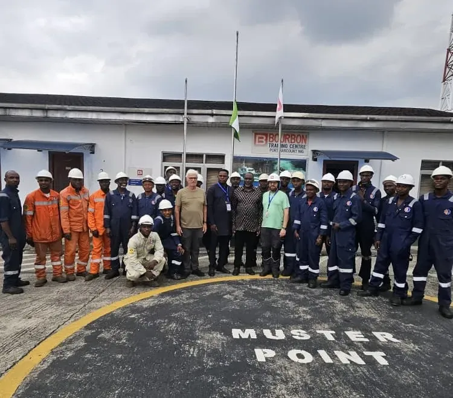

About Kenoc Nigeria Limited
Delivering reliable marine and engineering services in Nigeria since 1999.
Who We Are
Kenoc Nigeria Limited was established in 1999 as a marine and engineering services company dedicated to supporting vessel operations and port-based activities in Nigeria. Over more than two decades of continuous operation, we have developed substantial expertise in vessel engine maintenance, marine equipment servicing, generator systems, and technical support services. Our company has grown steadily by maintaining focus on operational reliability, technical competence, and responsive service delivery to marine operators, logistics companies, and oil and gas service providers working in Port Harcourt harbor and surrounding waterways.
Throughout our operational history, we have prioritized building lasting relationships with clients through consistent performance, transparent dealings, and adherence to safety and quality standards.

Our Mission
To deliver reliable marine and engineering services that support safe, efficient vessel operations in Nigeria and surrounding waterways. We provide technically competent maintenance, repair, and support services focused on minimizing operational downtime and maintaining equipment performance.
Our Vision
To build sustained capability in marine and engineering services through continuous technical development and skilled personnel cultivation. We aim to remain a dependable, long-term service provider within Nigeria's maritime sector.
Core Values
Our Objectives
Kenoc Nigeria Limited operates with clear, measurable objectives that guide our strategic decisions, operational priorities, and service development initiatives. These objectives reflect our commitment to continuous improvement, client satisfaction, and sustained contribution to Nigeria's maritime industry.
Operational Excellence
Maintain high standards in all service delivery through systematic quality control, skilled workmanship, and adherence to established maintenance procedures and technical specifications.
Client Satisfaction
Build lasting relationships with marine operators through responsive service, clear communication, reliable technical support, and consistent delivery on commitments and service level expectations.
Safety Leadership
Achieve and maintain exemplary safety performance across all operations by fostering a proactive safety culture, implementing robust safety systems, and ensuring zero tolerance for unsafe practices.
Continuous Improvement
Invest in technical training, upgrade facilities and equipment, adopt improved work methods, and implement lessons learned to progressively enhance service capability and operational efficiency.
Our Commitment to Excellence
Kenoc Nigeria Limited operates under comprehensive policy frameworks covering all aspects of our business operations. We have established formal policies addressing safety management, health protection, environmental responsibility, security, and community engagement. These policies reflect our commitment to conducting business in a manner that protects people, respects the environment, maintains operational integrity, and contributes positively to the communities where we work.
Our policies are not mere documentation exercises but practical guides that inform daily decisions, operational procedures, and management priorities. They establish clear expectations for all personnel, provide accountability mechanisms, and demonstrate our commitment to operating as a responsible corporate entity within Nigeria's regulatory framework and international industry standards. We regularly review and update our policies to ensure they remain relevant, effective, and aligned with evolving operational realities and stakeholder expectations.
View Our PoliciesGet in Touch to Discuss Your Requirements
Contact us to learn more about how Kenoc Nigeria Limited can support your vessel maintenance and technical service needs.
Contact Us